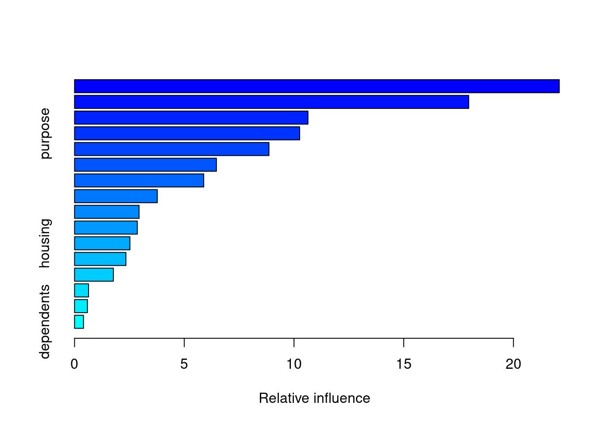
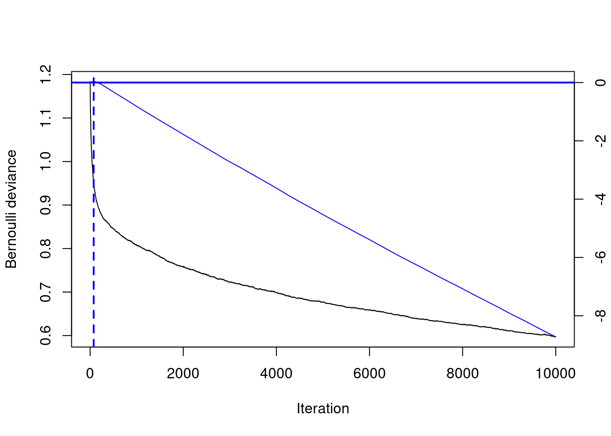
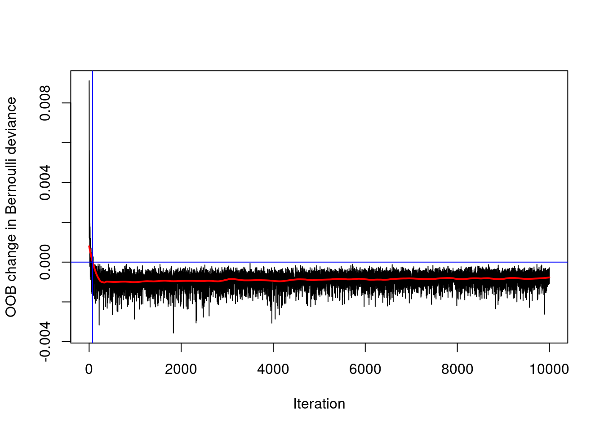
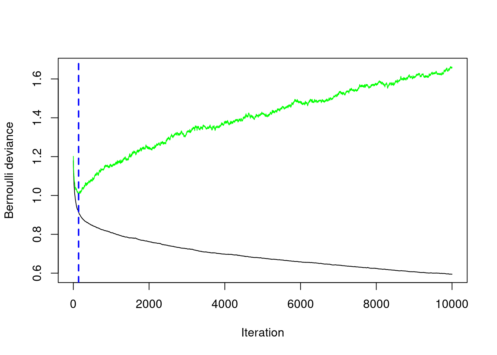

Chapter 6 Boosted Trees
6.1 Introduction to Boosting
6.1.1 Bagged trees vs. boosted trees
What is the main difference between bagged trees and boosted trees?
Boosted trees don’t perform as well as bagged trees.
Boosted trees have fewer hyperparameters to tune than bagged trees.
Boosted trees improve the model fit by considering past fits and bagged trees do not.
6.2 Train a GBM Model
Here you will use the gbm() function to train a GBM classifier to predict loan default. You will train a 10,000-tree GBM on the credit_train dataset, which is pre-loaded into your workspace.
Using such a large number of trees (10,000) is probably not optimal for a GBM model, but we will build more trees than we need and then select the optimal number of trees based on early performance-based stopping. The best GBM model will likely contain fewer trees than we started with.
For binary classification, gbm() requires the response to be encoded as 0/1 (numeric), so we will have to convert from a “no/yes” factor to a 0/1 numeric response column.
Also, the the gbm() function requires the user to specify a distribution argument. For a binary classification problem, you should set distribution = "bernoulli". The Bernoulli distribution models a binary response.
Exercise
- Convert from a “no/yes” factor to a 0/1 numeric response column using the
ifelse()function.
- Train a 10,000-tree GBM model.
# Train a 10000-tree GBM model
set.seed(1)
credit_model <- gbm(formula = default ~ .,
distribution = "bernoulli",
data = credit_train,
n.trees = 10000)
# Print the model object
print(credit_model)gbm(formula = default ~ ., distribution = "bernoulli", data = credit_train,
n.trees = 10000)
A gradient boosted model with bernoulli loss function.
10000 iterations were performed.
There were 16 predictors of which 16 had non-zero influence.
var rel.inf
amount amount 22.0897595
age age 17.9626175
credit_history credit_history 10.6369658
purpose purpose 10.2584546
employment_duration employment_duration 8.8596192
checking_balance checking_balance 6.4650840
months_loan_duration months_loan_duration 5.8863990
savings_balance savings_balance 3.7722735
job job 2.9418015
other_credit other_credit 2.8613862
housing housing 2.5237773
years_at_residence years_at_residence 2.3409228
percent_of_income percent_of_income 1.7687143
phone phone 0.6373101
existing_loans_count existing_loans_count 0.5870700
dependents dependents 0.40784476.3 Understanding GBM Model Output
6.3.1 Prediction using a GBM model
The gbm package uses a predict() function to generate predictions from a model, similar to many other machine learning packages in R. When you see a function like predict() that works on many different types of input (a GBM model, a RF model, a GLM model, etc), that indicates that predict() is an “alias” for a GBM-specific version of that function. The GBM specific version of that function is predict.gbm(), but for convenience sake, we can just use predict() (either works).
One thing that’s particular to the predict.gbm() however, is that you need to specify the number of trees used in the prediction. There is no default, so you have to specify this manually. For now, we can use the same number of trees that we specified when training the model, which is 10,000 (though this may not be the optimal number to use).
Another argument that you can specify is type, which is only relevant to Bernoulli and Poisson distributed outcomes. When using Bernoulli loss, the returned value is on the log odds scale by default and for Poisson, it’s on the log scale. If instead you specify type = "response", then gbm converts the predicted values back to the same scale as the outcome. This will convert the predicted values into probabilities for Bernoulli and expected counts for Poisson.
Exercise
- Generate predictions on the test set, using 10,000 trees.
# Since we converted the training response col, let's also convert the test response col
credit_test$default <- ifelse(credit_test$default == "yes", 1, 0)
# Generate predictions on the test set
preds1 <- predict(object = credit_model,
newdata = credit_test,
n.trees = 10000)- Generate predictions on the test set using
type = "response"and 10,000 trees.
# Generate predictions on the test set (scale to response)
preds2 <- predict(object = credit_model,
newdata = credit_test,
n.trees = 10000,
type = "response")- Compare the ranges of the two sets of predictions.
[1] -6.004812 4.646991[1] 0.002460783 0.9905006856.3.2 Evaluate test set AUC
Compute test set AUC of the GBM model for the two sets of predictions. We will notice that they are the same value. That’s because AUC is a rank-based metric, so changing the actual values does not change the value of the AUC.
However, if we were to use a scale-aware metric like RMSE to evaluate performance, we would want to make sure we converted the predictions back to the original scale of the response.
Exercise
The preds1 and preds2 prediction vectors from the previous exercise are pre-loaded into the workspace.
- Compute AUC of the predictions.
[1] 0.7142857- Compute AUC of the predictions (scaled to response).
[1] 0.7142857- Notice that the AUC is the same!
6.4 GBM Hyperparameters
6.4.1 Early Stopping in GBMs
Use the gbm.perf() function to estimate the optimal number of boosting iterations (aka n.trees) for a GBM model object using both OOB and CV error. When you set out to train a large number of trees in a GBM (such as 10,000) and you use a validation method to determine an earlier (smaller) number of trees, then that’s called “early stopping”. The term “early stopping” is not unique to GBMs, but can describe auto-tuning the number of iterations in an iterative learning algorithm.
Exercise
The credit_model object is loaded in the workspace.
- Use the
gbm.perf()function with the “OOB” method to get the optimal number of trees based on the OOB error and store that number asntree_opt_oob.
# Optimal ntree estimate based on OOB
ntree_opt_oob <- gbm.perf(object = credit_model,
method = "OOB",
oobag.curve = TRUE)## OOB generally underestimates the optimal number of iterations although predictive performance is reasonably competitive. Using cv_folds>1 when calling gbm usually results in improved predictive performance.
- Train a new GBM model, this time with cross-validation, so we can get a cross-validated estimate of the optimal number of trees.
# Train a CV GBM model
set.seed(1)
credit_model_cv <- gbm(formula = default ~ .,
distribution = "bernoulli",
data = credit_train,
n.trees = 10000,
cv.folds = 2,
n.cores = 1)CV: 1
CV: 2 - Lastly, use the gbm.perf() function with the “cv” method to get the optimal number of trees based on the CV error and store that number as ntree_opt_cv.
# Optimal ntree estimate based on CV
ntree_opt_cv <- gbm.perf(object = credit_model_cv,
method = "cv")
- Compare the two numbers.
[1] "Optimal n.trees (OOB Estimate): 76"[1] "Optimal n.trees (CV Estimate): 139"6.4.2 OOB vs CV-Based Early Stopping
In the previous exercise, we used OOB error and cross-validated error to estimate the optimal number of trees in the GBM. These are two different ways to estimate the optimal number of trees, so in this exercise we will compare the performance of the models on a test set. We can use the same model object to make both of these estimates since the predict.gbm() function allows you to use any subset of the total number of trees (in our case, the total number is 10,000).
Exercise
The ntree_opt_oob and ntree_opt_cv objects from the previous exercise (each storing an “optimal” value for n.trees) are loaded in the workspace.
Using the credit_model loaded in the workspace, generate two sets of predictions:
- One using the OOB estimate of
n.trees: 3,233 (stored inntree_opt_oob)
# Generate predictions on the test set using ntree_opt_oob number of trees
preds1 <- predict(object = credit_model,
newdata = credit_test,
n.trees = ntree_opt_oob)
auc1 <- auc(actual = credit_test$default, predicted = preds1)- And the other using the CV estimate of
n.trees: 7,889 (stored inntree_opt_cv)
# Generate predictions on the test set using ntree_opt_cv number of trees
preds2 <- predict(object = credit_model,
newdata = credit_test,
n.trees = ntree_opt_cv)
auc2 <- auc(actual = credit_test$default, predicted = preds2)- Compare the AUCs
[1] "Test set AUC (OOB): 0.802527472527472"[1] "Test set AUC (CV): 0.788241758241758"6.5 Model Comparison via ROC Curve & AUC
6.5.1 Compare All Models Based on AUC
In this final exercise, we will perform a model comparison across all types of models that we’ve learned about so far: Decision Trees, Bagged Trees, Random Forest and Gradient Boosting Machine (GBM). The models were all trained on the same training set, credit_train, and predictions were made for the credit_test dataset.
We have pre-loaded four sets of test set predictions, generated using the models we trained in previous chapters (one for each model type). The numbers stored in the prediction vectors are the raw predicted values themselves – not the predicted class labels. Using the raw predicted values, we can calculate test set AUC for each model and compare the results.
Exercise
Loaded in your workspace are four numeric vectors:
dt_predsbag_predsrf_predsgbm_preds
These predictions were made on credit_test, which is also loaded into the workspace.
- Apply the
Metrics::auc()function to each of these vectors to calculate test set AUC. Recall that the higher the AUC, the better the model.
# Generate the test set AUCs using the two sets of predictions & compare
a <- credit_Test$default
dt_auc <- auc(actual = a, predicted = dt_preds)
bag_auc <- auc(actual = a, predicted = bag_preds)
rf_auc <- auc(actual = a, predicted = rf_preds)
gbm_auc <- auc(actual = a, predicted = gbm_preds)# Print results
sprintf("Decision Tree Test AUC: %.3f", dt_auc)
sprintf("Bagged Trees Test AUC: %.3f", bag_auc)
sprintf("Random Forest Test AUC: %.3f", rf_auc)
sprintf("GBM Test AUC: %.3f", gbm_auc)6.5.2 Plot & Compare ROC Curves
We conclude this course by plotting the ROC curves for all the models (one from each chapter) on the same graph. The ROCR package provides the prediction() and performance() functions which generate the data required for plotting the ROC curve, given a set of predictions and actual (true) values.
The more “up and to the left” the ROC curve of a model is, the better the model. The AUC performance metric is literally the “Area Under the ROC Curve”, so the greater the area under this curve, the higher the AUC, and the better-performing the model is.
Exercise
The ROCR package can plot multiple ROC curves on the same plot if you plot several sets of predictions as a list.
- The
prediction()function takes as input a list of prediction vectors (one per model) and a corresponding list of true values (one per model, though in our case the models were all evaluated on the same test set so they all have the same set of true values). Theprediction()function returns a “prediction” object which is then passed to theperformance()function.
# List of predictions
preds_list <- list(dt_preds, bag_preds, rf_preds, gbm_preds)
# List of actual values (same for all)
m <- length(preds_list)
actuals_list <- rep(list(credit_test$default), m)
# Plot the ROC curves
pred <- prediction(preds_list, actuals_list)- The
performance()function generates the data necessary to plot the curve from the “prediction” object. For the ROC curve, you will also pass along two measures,"tpr"and"fpr".
- Once you have the “performance” object, you can plot the ROC curves using the
plot()method. We will add some color to the curves and a legend so we can tell which curves belong to which algorithm.